All videos
Every Wait, That Big? video so far, newest first. Open one to make your guess and see the answer.
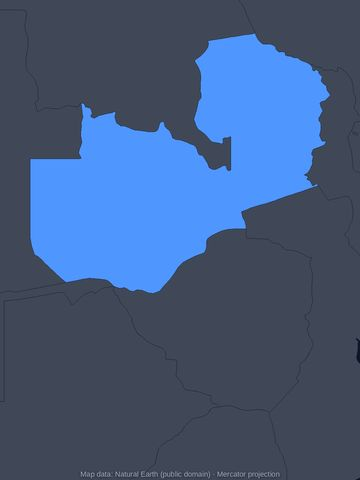
#30 · How many fit? How many Denmarks fit inside Zambia?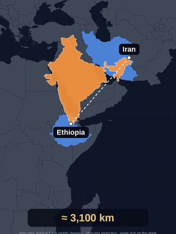
#29 · What if…? What if India were in the Middle East?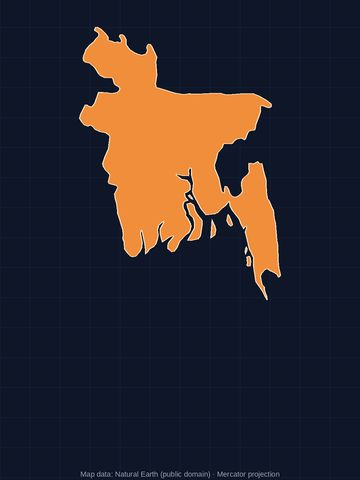
#28 · Shape quiz Which country is this?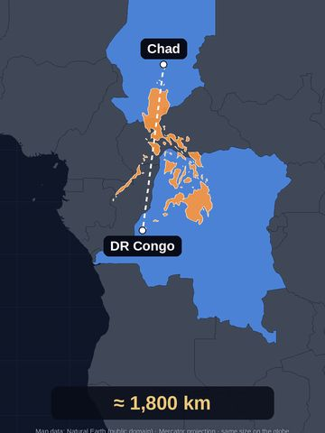
#27 · What if…? What if Philippines were in Africa?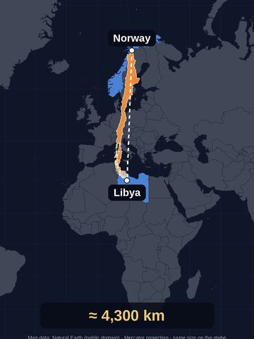
#26 · What if…? What if Chile were in Europe?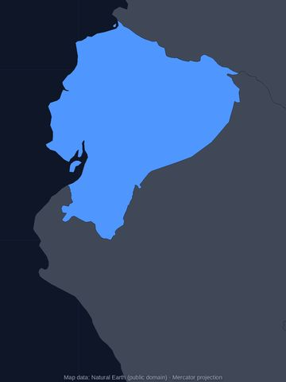
#25 · How many fit? How many Irelands fit inside Ecuador?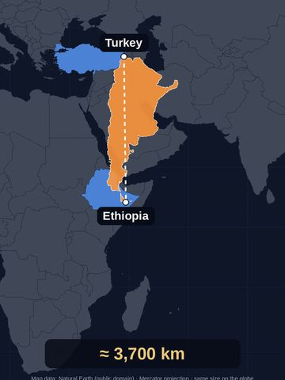
#24 · What if…? What if Argentina were in the Middle East?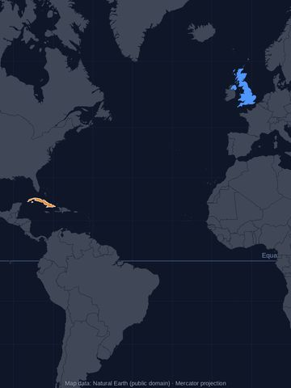
#23 · Which is bigger? Cuba or UK: which is bigger? #22 · How many fit?
How many Vietnams fit inside Mongolia?
#22 · How many fit?
How many Vietnams fit inside Mongolia?
 #21 · Shape quiz
Which country is this?
#21 · Shape quiz
Which country is this?
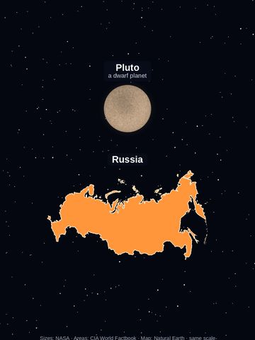
#20 · Space: which is bigger? Pluto's whole surface or Russia: which is bigger?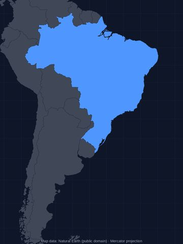
#19 · How many fit? How many Sri Lankas fit inside Brazil?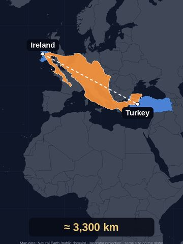
#18 · What if…? What if Mexico were in Europe? #17 · Which is bigger?
Canada or Russia: which is bigger?
#17 · Which is bigger?
Canada or Russia: which is bigger?
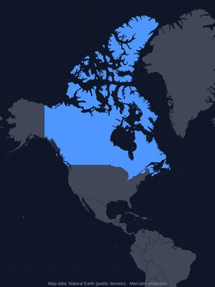
#16 · How many fit? How many Italys fit inside Canada?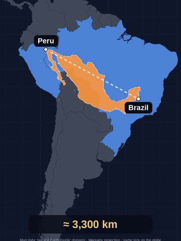
#15 · What if…? What if Mexico were in South America?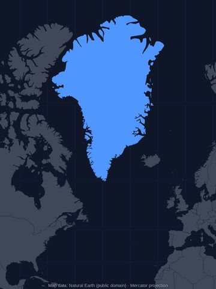
#14 · How many fit? How many Polands fit inside Greenland?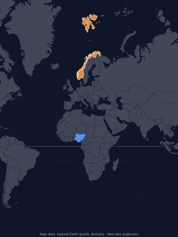
#13 · Which is bigger? Norway or Nigeria: which is bigger? #12 · Shape quiz
Which country is this?
#12 · Shape quiz
Which country is this?
 #11 · Space: which is wider?
Io or Australia: which is wider?
#11 · Space: which is wider?
Io or Australia: which is wider?
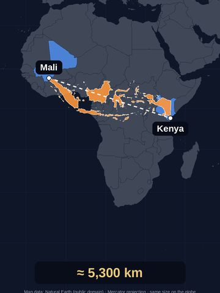
#10 · What if…? What if Indonesia were in Africa? #9 · How many fit?
How many Cambodias fit inside Greenland?
#9 · How many fit?
How many Cambodias fit inside Greenland?
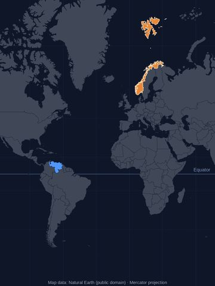
#8 · Which is bigger? Norway or Venezuela: which is bigger? #7 · Space: which is wider?
Vesta or Austria: which is wider?
#7 · Space: which is wider?
Vesta or Austria: which is wider?
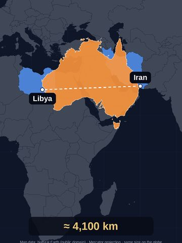
#6 · What if…? What if Australia were in the Middle East? #5 · How many fit?
How many Swedens fit inside Libya?
#5 · How many fit?
How many Swedens fit inside Libya?
 #4 · Which is bigger?
Finland or Iran: which is bigger?
#4 · Which is bigger?
Finland or Iran: which is bigger?
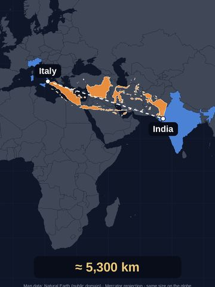
#3 · What if…? What if Indonesia were in the Middle East? #2 · How many fit?
How many Uruguays fit inside Greenland?
#2 · How many fit?
How many Uruguays fit inside Greenland?
 #1 · Which is bigger?
Norway or Algeria: which is bigger?
#1 · Which is bigger?
Norway or Algeria: which is bigger?